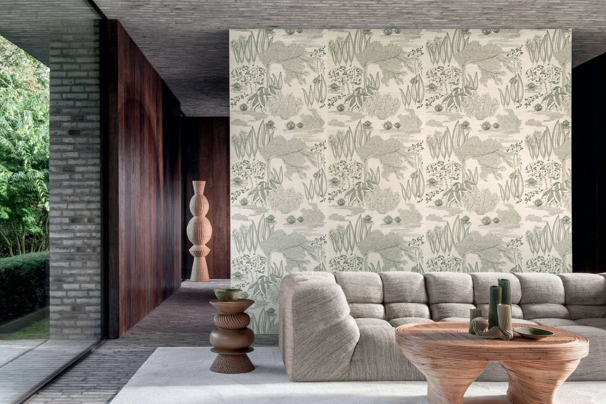
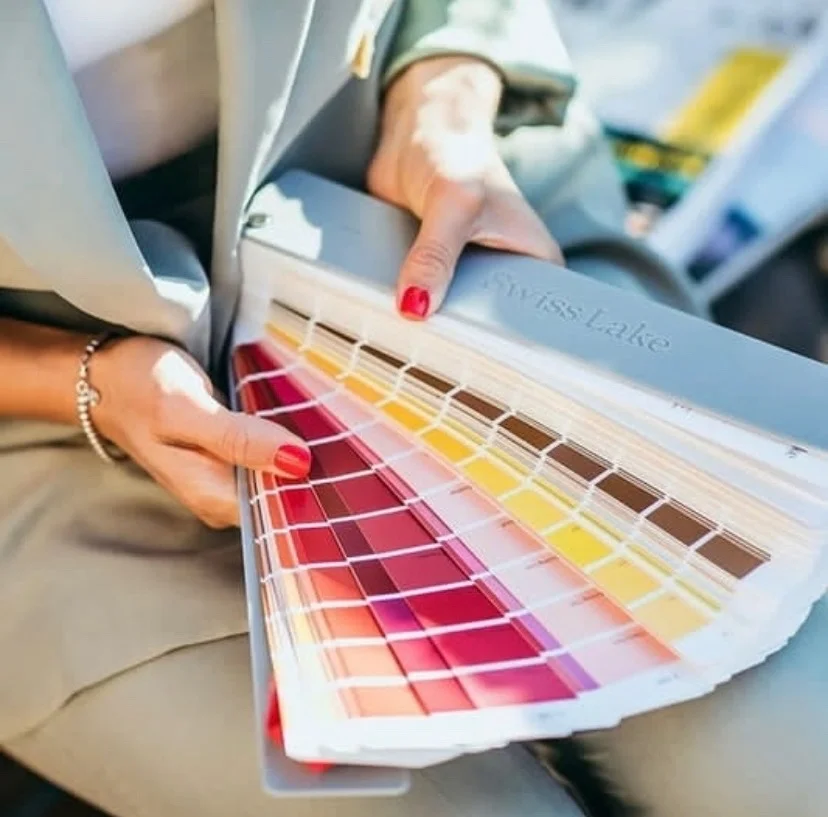
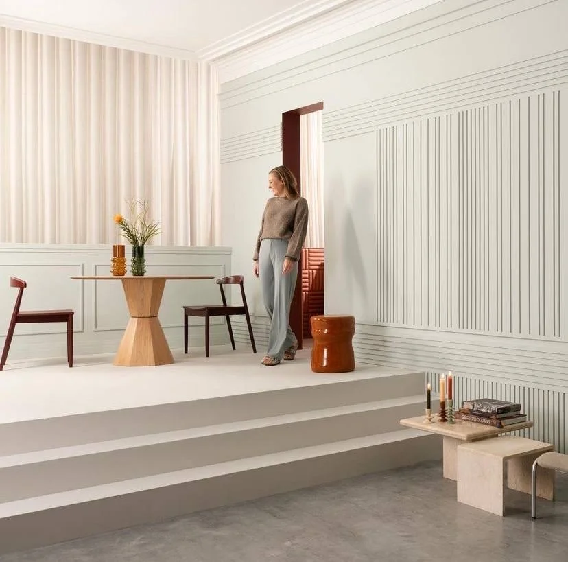
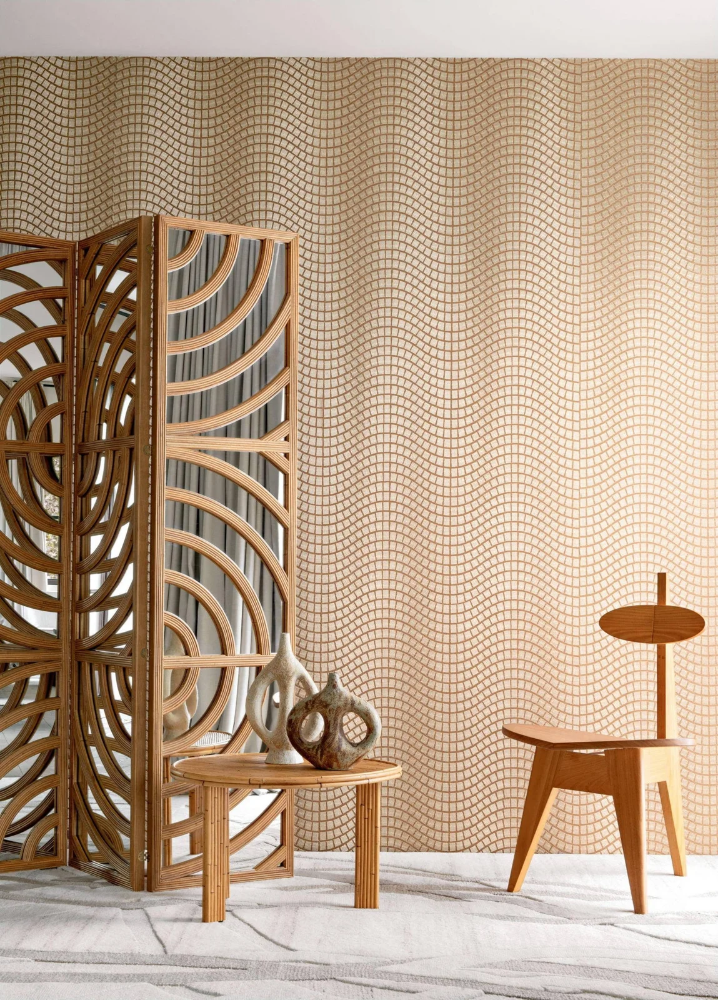
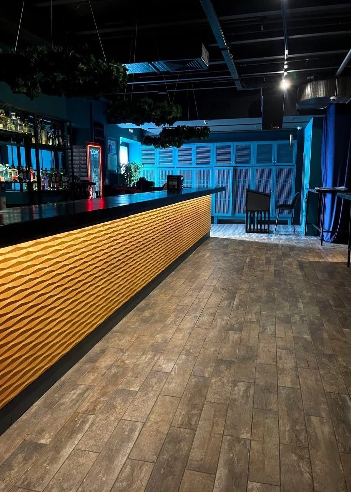
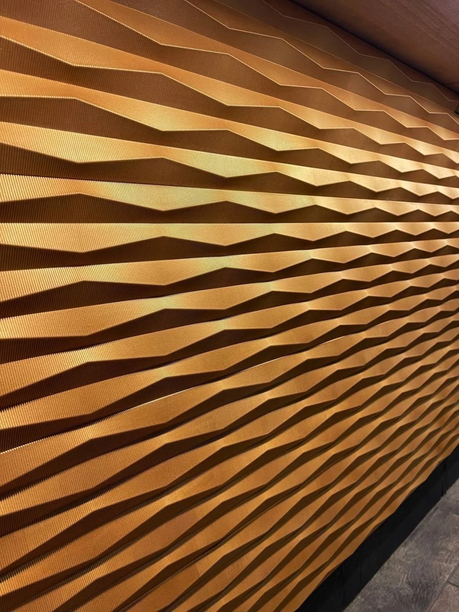

Колеровка
Обсудите нужный оттенок и подходящую краску. В салоне есть колеровочное оборудование.

Обои, краски, панели и декор.
Соберём их в единое решение для вашего дома.
Начните с материала, который вам нравится.
Сочетания подберём вместе.

Цвет как отправная точка

Рельеф и архитектура стены

Фактура, которую хочется рассматривать
В демо-каталоге — 12 позиций из сайта и постов салона. Обои, краски и панели Orac можно добавить в подборку.
Лепной декор и 3D-панели Orac можно взять на примерку на объект. Сравните масштаб, рельеф и игру света там, где материал будет использоваться.
Расскажите о проекте и материалах, которые хотите посмотреть. Менеджер уточнит доступные образцы и договорится с вами об условиях.
Стоимость, срок примерки, залог и географию выезда нужно согласовать. Бесплатная услуга не обещается.
Услуга в публикации салона от 18.10.2026Направления из действующего сайта салона. Конкретные материалы подбираются под помещение и задачу.
Принесите проект, коллаж или фото. В салоне можно сравнить материалы рядом и обсудить, как они будут смотреться в вашем пространстве.
Обсуждаем помещение и пожелания.
Сравниваем оттенки, покрытия и декор.
Уточняем объём и стоимость. Согласуем условия.
Доставку и сроки подтверждает менеджер. Если ремонт ещё идёт, обсудите временное хранение оплаченного заказа.
Подбор по спецификации, расчёт материалов, удалённое согласование и поиск альтернатив. Обсудим комплектацию вашего проекта с сохранением его замысла.
Условия сотрудничества на сайте салонаСалон публикует встречи для дизайнеров и примеры применения материалов. Семинар 14.08.2025 . Ближайшие даты уточняйте у команды.
Обсудите нужный оттенок и подходящую краску. В салоне есть колеровочное оборудование.
Рассчитаем материалы по проекту и предложим альтернативы, если позиция не подходит по бюджету или снята с производства.
Временное хранение оплаченных материалов: срок и условия согласуются с командой салона.
Техническая поддержка, расчёт с учётом подрезки и раппорта, согласование сроков поставки.
«И после заказа команда остаётся на связи»
Ольга Чекалина, дизайнер интерьера
Отзыв опубликован на сайте салона. Читать отзывы партнёров
В проекте дизайнера Виктории Смоленцевой для барной стойки использованы панели Orac W112 RIDGE. В публикации салона показано, как золотистый цвет и верхняя подсветка подчёркивают рельеф.


Проект: Виктория Смоленцева. Фотографии из публикации МАРТдекора.
Салон предлагает временное хранение оплаченных заказов. Срок, объём и условия нужно согласовать до заказа.
В салоне можно обсудить примерку лепного декора и 3D-панелей Orac на объекте или выезд с образцами. Условия и доступность конкретных образцов согласует менеджер.
Да. Подготовьте фотографии помещения и примеры того, что вам нравится: они помогут начать подбор.
Менеджер подтверждает состав, наличие, стоимость и доставку, затем выставляет счёт. Заказ оформляется по 100% предоплате. В салоне: наличные, карта или QR; дистанционно — СБП по счёту. Оплата на сайте не производится.
Стоимость и сроки рассчитываются для вашего заказа. По Ростову-на-Дону используется Яндекс Go: тариф согласуется до отправки. В другие города — транспортные компании, стоимость и сроки рассчитываются индивидуально.
В публикациях ВК цена не указана. Для расчёта нужны выбранный артикул, объём и актуальные условия поставки. Добавьте материалы в подборку и обсудите их с салоном.
Ростов-на-Дону
проспект Михаила Нагибина, 30Л
Дизайн-центр WEST, цокольный этаж
Пн–пт: 10:00–19:00
Сб–вс: 10:00–17:00
График со страницы контактов салона, проверен 15.11.2026. В праздники график может меняться.
+7 (909) 420-94-20 · Екатерина
info@martdecor.ru
Расскажите о пространстве, которое хотите создать.
Дизайн-центр WEST, цокольный этаж.